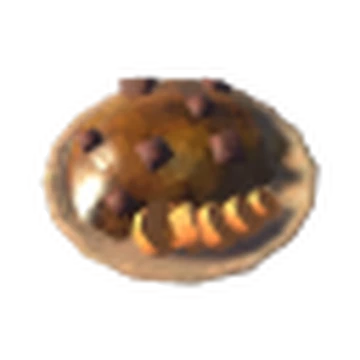

Deer Stew

Craftable after discovering the Black Forest biome.
Item description:
Fall-apart tender.
Ingredients:
1 Blueberries
1 Carrot
1 Cooked deer meat
Effects:
Max Health: 45
Max Stamina: 15
Duration: 1500s
Healing: 3hp/tick
Back to Home